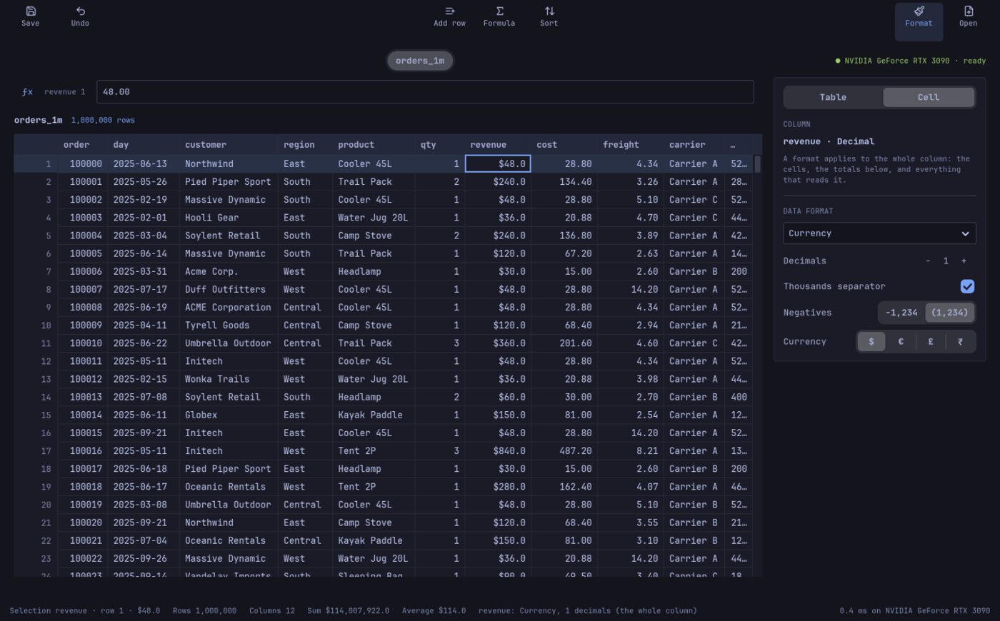

SQL on your CPU and your GPU, over the files you already have. Written in Mojo, with no Python inside.
→ arrow keys, space or swipe
Most laptops and workstations have one. Analytics engines run on the CPU and leave it unused.
CSV and Parquet. Most tools want you to import them first, into their own format.
An agent can't squint at a result. It needs exact answers, and errors it can fix in one round.
Point it at a CSV or a Parquet file and ask. No import, no new format.
CPU or GPU, chosen per query, with the reason.
Exact decimals, a note for every decision, errors with a hint.
Like SQLite: a library that links into any app. Not a server, not a database, not a Python package.
three languages, glue between them
one language · compiled ahead of time · no garbage collector · NVIDIA today, AMD and Apple next
SELECT region, sum(revenue) AS revenue
FROM 'orders.csv'
GROUP BY region
SELECT region, sum(revenue) AS revenue
FROM 'orders.csv'
WHERE qty > 2
GROUP BY region
ORDER BY revenue DESC
LIMIT 3
SELECT region, sum(revenue) AS revenue
FROM 'orders.csv'
WHERE qty > 2
GROUP BY region
ORDER BY revenue DESC
LIMIT 3
It prices the query on the CPU, and on the GPU with the cost of copying the data there.
Whichever is faster wins, and the reason is part of the answer.
Tuned on your machine, not ours.
Parquet streams through a row group at a time. The file never has to fit.
0.6.0 release run · query time only · every answer equal to DuckDB's
And honestly: one query (Q21) carries the lead. Without it DuckDB's total is lower, and DuckDB is still faster on several join-heavy queries. Every gap is written down.
a real session · works today one binary, starts in 12 ms, no Python
sql, explain, schema, search as tools for any agent.
Embeddings beside the data, nearest neighbours with SQL filters, in one query.
Keyword, vector and SQL in one ranked call. Label millions of rows, batched.
Facts with time and source, in plain Parquet, queried like any table.

a native app that links the engine directly · no Python, no server
The data engine for the agent era.
Apache-2.0 · built in Mojo by one founder and a team of AI agents, 2026